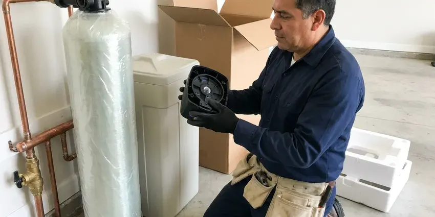
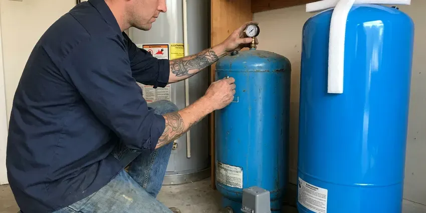

Water Heater Replacement in Kalamazoo, MI
For reliable water heater replacement in Kalamazoo, MI, trust CHV Plumbing. We handle all types of units, getting your home back to comfort quickly.
- Clear Pricing
- Prompt Local Service
- Code Approved
- Licensed Water Heater Plumbers
Need a New Water Heater Put In in Kalamazoo, MI?
Do not wait for cold showers, call CHV Plumbing for prompt service.
Your Local Expert for Water Heater Replacement in Kalamazoo, MI
CHV Plumbing replaces worn-out and leaking water heaters with new gas or electric tanks sized for your household. We drain and remove the old unit, install the new heater with fresh connections and bring the installation up to current code. Every heater is tested for proper temperature, venting and tight connections.
Our expertise includes:
- Venting, gas connector and relief valve drain line upgrades
- Complete removal and disposal of old water heater units.
- Accurate sizing for strong hot water delivery and energy efficiency.

Additional Plumbing Replacement Services in Kalamazoo, MI
When repairs are no longer enough, our replacement services in Kalamazoo, MI deliver modern, efficient equipment installed right.



Kalamazoo water softener replacement specialists


Customers
Why Choose CHV Plumbing for Water Heater Replacement in Kalamazoo, MI?
Our commitment to quality service and customer satisfaction sets us apart. We make sure every water heater replacement meets our high standards for reliability and performance.
- Code Compliance, All installations strictly follow Michigan plumbing codes, including proper venting and TPR valve setup.
- Energy Efficiency, We recommend and install units that help reduce utility bills, a real benefit in any climate.
- Warranty Protection, Our work and many of the units we install come with robust manufacturer and labor warranties for your peace of mind.
Citywide Coverage
We replace water heaters in homes throughout Kalamazoo, whether the tank sits in a garage, an interior closet or an attic platform. Our crews carry the parts needed for most installation locations.
Experienced Team
The team understands the code differences between older and newer installations and plans upgrades to match. They explain each upgrade so you know exactly what you are paying for.
Safety-First Approach
Safety comes first in all our water heater replacement services. We carefully follow manufacturer guidelines and local Michigan codes, especially for gas lines, electrical connections and proper ventilation.
Trusted Certified Kalamazoo Plumbing Services Professionals
At CHV Plumbing, we take pride in providing licensed, certified plumbing services throughout Kalamazoo, MI. Backed by leading industry credentials, our experienced plumbers combine technical skill with genuine customer care. Whether it is repair, installation, or maintenance, we follow strict safety and quality standards to deliver lasting results you can trust.
Call Us Now PHCC Plumbing Contractor Recognition
PHCC Plumbing Contractor Recognition Better Business Bureau (BBB) Accreditation
Better Business Bureau (BBB) Accreditation Angi Certified Pro
Angi Certified Pro ISO 9001 Quality Management Certification
ISO 9001 Quality Management CertificationProfessional Water Heater Replacement Services in Kalamazoo, MI
Electric Water Heater Replacement in Kalamazoo
Many homes in Kalamazoo rely on electric water heaters. When yours fails, it can be due to sediment buildup, a faulty heating element or an aging tank. CHV Plumbing provides expert electric water heater replacement, with proper electrical connections and efficient operation for consistent hot water. We handle all wiring and make sure your new unit is safely installed to code, restoring your home's comfort without delay.

Tankless Water Heater Upgrades in Kalamazoo
Thinking about an upgrade to a tankless water heater in Kalamazoo? Tankless units offer endless hot water and energy savings. CHV Plumbing can assess your home's needs and replace your old tank-style unit with a high-efficiency tankless model. This often involves adjusting gas lines, water lines and venting, which our experts handle smoothly. Enjoy the benefits of on-demand hot water with a professional tankless installation.
Rheem and Ruud Water Heater Replacement in Kalamazoo, MI
Rheem and Ruud are widely used water heater brands known for their durability. Our technicians in Kalamazoo, MI are experienced with replacing many Rheem and Ruud models, whether gas, electric or tankless. We make sure all connections, venting and safety features are correctly installed for performance and longevity, maximizing your investment.
Gas Water Heater Replacement in Kalamazoo, MI
Gas water heaters are common in many homes, offering powerful heating. Issues like burner problems, gas leaks or a corroded tank signal the need for replacement. CHV Plumbing focuses on gas water heater replacement in Kalamazoo, MI, with precise gas line connections, proper venting and carbon monoxide safety. Our licensed plumbers follow strict safety protocols, installing your new gas unit for the best efficiency and peace of mind.
Bradford White Water Heater Services in Kalamazoo
CHV Plumbing is experienced with all major water heater brands, including Bradford White, a popular choice for its reliability. When replacing a Bradford White unit, we handle proper model selection, correct installation to manufacturer specifications and warranty compliance. Our experience with specific brands means a smoother and more efficient replacement in Kalamazoo.
Hybrid Water Heater Installation in Kalamazoo, MI
Hybrid water heaters combine heat pump technology with traditional electric heating, offering significant energy savings, especially when installed in a warm space like a garage. CHV Plumbing provides professional hybrid water heater installation in Kalamazoo, MI, helping you reduce your energy use and utility bills. These units require specific electrical and venting considerations, which our experienced technicians are fully equipped to manage for reliable performance.
Rheem and AO Smith Water Heater Replacement in Kalamazoo, MI
Rheem and AO Smith are leading brands in the water heater industry, offering a wide range of reliable models. CHV Plumbing provides professional replacement for Rheem and AO Smith water heaters in Kalamazoo, MI. We can help you choose the ideal model, whether it is a standard tank, high-efficiency or tankless unit, and install it to manufacturer specifications for performance and warranty validity.

Bradford White, Rheem and A.O. Smith in Kalamazoo, MI
We install proven brands including Bradford White, Rheem and A.O. Smith. Bradford White is sold through professional plumbers and is known for durable construction. Rheem and A.O. Smith offer a wide range of capacities and efficiency options. We help you compare warranties, features and price to find the best fit.
Local Water Heater Replacement in Kalamazoo, MI
If you are searching for 'water heater replacement near me' in Kalamazoo, MI, look no further than CHV Plumbing. Our local team is positioned to provide rapid service across the entire area, so your hot water emergency is handled quickly and professionally.
When you search for "water heater replacement near me" in Kalamazoo, MI, CHV Plumbing is your go-to local choice. We take pride in quick response times and efficient service, understanding that hot water is a necessity, not a luxury. Our team is always ready to head out to your location.
CHV Plumbing at a Glance
- Fully licensed plumbing team covering Kalamazoo, MI
- 24/7 emergency service with same-day scheduling
- Upfront, flat-rate pricing before work begins
- 4.9-star rated by 670+ Michigan customers
Kalamazoo Map
Kalamazoo Information
- Population
- 73,126
- Area codes
- 269/616/248
- Service area
- Kalamazoo and communities within 40 miles
- Nearby
- Portage, Battle Creek, Kentwood, Holland
A reliable water heater is essential for comfort year-round in Kalamazoo, MI, and proper installation keeps it efficient through changing temperatures and water conditions.
Expert Services
Trust our professionals for reliable CHV Plumbing solutions in Kalamazoo, MI.
Our Specialized Plumbing Services in Kalamazoo, MI
At CHV Plumbing, we provide a complete range of plumbing services across Kalamazoo, MI. From leak detection to full system installations, our team ensures fast, precise, and affordable service for both residential and commercial properties. Explore our core services below:


How Our Water Heater Replacement Process Works in Kalamazoo, MI
Our water heater replacement process in Kalamazoo, MI is built around efficiency and transparency, so you get reliable hot water with minimal hassle.
Request a Quote
Start by calling (810) 380-5918 to schedule a consultation. We will discuss your hot water needs and current water heater issues and provide an accurate, upfront quote for a new unit and installation.
Site Assessment
Our technician will visit your Kalamazoo home to assess your current setup, determine the best replacement options and confirm sizing requirements based on your household's usage.
Professional Installation
We expertly remove your old water heater, dispose of it properly and install your new unit, making sure all connections, venting and safety features meet Michigan codes.
Frequently Asked Questions About Water Heater Replacement in Kalamazoo
The cost of water heater replacement in Kalamazoo, MI typically ranges from $1,200 to $3,500, depending on the type of unit (gas, electric, tankless or hybrid), its capacity and any necessary plumbing modifications. Our team will provide a detailed, upfront quote after assessing your needs and existing setup.
Most replacements take two to four hours. Attic installs or relocations can take more time.
Tank water heaters often last about 8 to 12 years, and hard water and sediment buildup can shorten that. Well water across much of the state tends to be harder and often carries iron, which stains sinks and clogs aerators. Annual flushing and anode rod checks can help extend that life.
We install Bradford White, Rheem and A.O. Smith water heaters. Each offers dependable performance and a range of warranties.
In general, if your water heater is over 10 years old, frequently breaks down or has a major issue like a leaking tank, replacement is often more cost-effective in the long run. For newer units with minor, easily fixable issues, repair might be a viable option. Our technicians can provide an honest assessment.
CHV Plumbing installs and services all major brands, including Bradford White, Rheem, AO Smith, Rinnai, Navien and State Water Heaters. We can help you choose the best brand and model that fits your budget and hot water demands.
Choosing the right size depends on the number of people in your household, their hot water usage habits and peak demand times. Our technicians will calculate the right GPM (gallons per minute) for tankless or gallon capacity for tank models so you never run out of hot water, especially in multi-bathroom Kalamazoo homes.
Tankless offers endless hot water and a longer lifespan but costs more upfront. We can compare both options around your household and budget.
What People Are Saying About Our Plumbing Experts?
James P.
Our commercial plumbing system had a leak under the sink, and CHV Plumbing handled it professionally. The plumbers arrived quickly and restored everything without disruption to our customers.
Commercial Plumbing · Wyoming, MI
Patricia H.
We had a slab leak that two other companies could not find. CHV Plumbing located it in under an hour, explained our options, and the price matched the quote to the dollar.
Slab Leak Repair · Wyoming, MI
Emily R.
I called CHV Plumbing for plumbing repair, and the technician was fast, polite, and thorough. They explained the problem clearly and fixed it the same day. I will definitely hire them again. Highly recommended!
Plumbing Repair · Kentwood, MI
Mark T.
When our office needed drain cleaning, CHV Plumbing provided quick, reliable service. The plumber arrived on time and made sure every drain flowed perfectly before leaving. Very satisfied.
Drain Cleaning · Grand Rapids, MI
Sofia M.
Two new toilets installed in one visit, no mess left behind, and the tech even adjusted a faucet he noticed was dripping. Fair pricing and really friendly.
Toilet Installation · Kalamazoo, MILaura S.
I scheduled a water heater replacement, and the team made the process smooth and affordable. The new unit works perfectly, and they cleaned up after completing the job.
Water Heater Replacement · Holland, MI